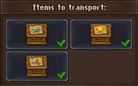
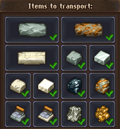
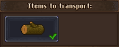
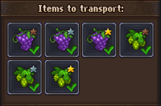
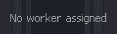
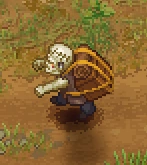

Porter station
| Porter station | |
|---|---|

| |
Basic information
| |
Required Technology :
|
Zombie logistics |
Related pages :
|
Zombies |
Building Information
| |
Horizontal x Vertical :
|
3x4 |
Rotatable :
|
No |
Location(s)
| |
| Barn cellar, Cabin in the woods, Felling site | |
You can put your  zombies at work to transport your goods. The crate factory and the sawmill comes with a built-in porter station, for the cabin in the woods and vineyard, you've got to build your own.
zombies at work to transport your goods. The crate factory and the sawmill comes with a built-in porter station, for the cabin in the woods and vineyard, you've got to build your own.
Cost
| Icon | Materials Required | Energy | Notes |
|---|---|---|---|

|
8× Flitch 4× Nails 2× Clean paper |
none | Comes already fully assembled. |
Graphic interface
Type "E" at the porter station to select whether a certain type of good should be transported or not. Click on the item to add/remove the green checkmark:

You can select silver, gold or goods crates at the crate factory.

You can select different kind of mining produce at the cabin in the woods.

You can only select logs at the sawmill.

You can select hops and grapes at the vineyard.

Pick up a  zombie and type "E" at the porter station to assign it to work. As soon as a crate shows up at the pallet, or an item is added to the respective stockpile or put into a trunk, it will be transported to the destination, if there's an empty space available.
zombie and type "E" at the porter station to assign it to work. As soon as a crate shows up at the pallet, or an item is added to the respective stockpile or put into a trunk, it will be transported to the destination, if there's an empty space available.
Clicking the porter station opens the interface above, showing the stats of the assigned zombie.
Porter

Porter zombies look like this. They pick up the selected goods at their porter station, if available, and haul those over to their destination (your workyard from the felling site and cabin in the woods, your trade office from the cellar of your crate factory, and your cellar from your vineyard). They put crates onto empty pallets, big blocks onto their respective stockpile and smaller items into a trunk, that has already this kind of item in it. If there's no space, they wait until you've made space enough to get rid of the goods.
Unemploying


If you want to get a zombie off its work, you can deselect all items and wait until it's back to the station. It enters there and waits for further commands. You can then hit "E" to get it off the station.
The other possibility is to intercept a porter zombie, stand in its way, and talk to it by hitting "E". In this case, the porter drops all the goods it's currently hauling around.
| ||||||||